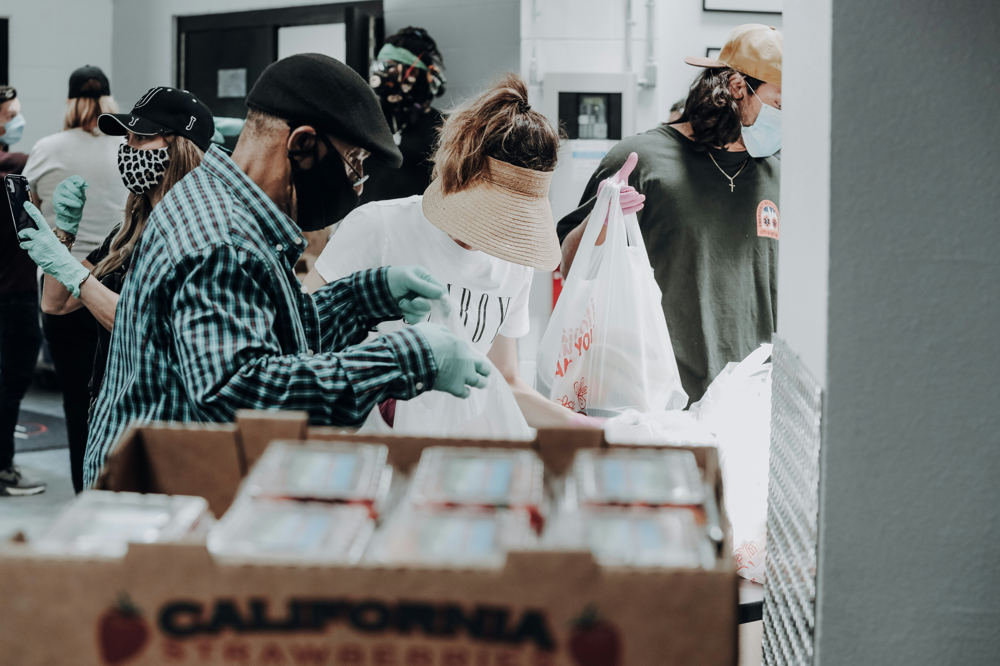

Esperanza en Cada Bocado
Llevamos comidas nutritivas y reconfortantes a los familiares de pacientes hospitalizados, ofreciendo un soporte tangible en tiempos de necesidad

Cada Comida, un Acto de Amor y Apoyo
Nuestros voluntarios están comprometidos a proporcionar comidas saludables y balanceadas, asegurando que los familiares de pacientes puedan mantenerse fuertes y enfocados en su ser querido

Extendiendo una Mano Amiga en Hospitales
Más que una comida, es un gesto de solidaridad. Ayúdanos a seguir llevando esperanza y nutrición a las puertas de los hospitales.